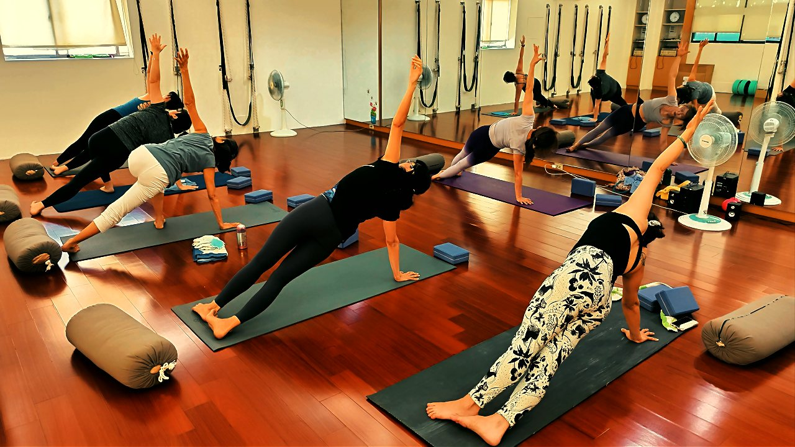

圓肩駝背，先鬆哪裡、先練哪裡？

你可能也試過：看到「改善圓肩」的影片就跟著練，肩胛骨夾了一堆下、伏地挺身也做了，結果肩膀不但沒開，反而更痠更緊。問題常常不是你不夠努力，而是順序反了——該鬆的還很緊，硬要它出力，當然愈練愈卡。
圓肩駝背，其實是「兩邊拔河」失衡
把肩膀想成一場拔河。身體前側的胸大肌、胸小肌因為你整天往前打電腦、滑手機，長期縮短、變得又緊又強勢；後背負責把肩胛骨拉回來的菱形肌、下斜方肌則被拉長、被拖到沒力。前面贏了，肩膀就一路被拉往前、往內，變成我們看到的圓肩。
脖子也是同一套劇本。上斜方肌、提肩胛肌整天聳著、繃著，摸起來硬硬的；真正該穩住頭的深頸屈肌卻沒被叫醒，頭就一點一點往前掉。所以圓肩駝背很少是「單一條肌肉的錯」，而是一組緊、一組弱，同時發生。想多了解這個前緊後弱的組合，可以看上交叉症候群是怎麼一回事。
正確順序：先「鬆」，再「練」
這也是為什麼順序這麼關鍵。如果後背的菱形肌本來就被前面的胸肌硬拉著，你這時候拼命練後背,它其實使不上力，反而會叫附近的上斜方肌來幫忙代償，練完脖子更痠。所以合理的做法是：
- 第一步「鬆」：先把過緊、太強勢的胸大肌、胸小肌、上斜方肌、提肩胛肌放鬆、拉長，把空間先讓出來。
- 第二步「練」：接著喚醒過弱的菱形肌、下斜方肌、深頸屈肌，讓它們重新學會把肩胛骨與頭穩回正位。
練對位置，比練多、練重要緊。順序反了，往往是愈練愈緊。
壁繩怎麼幫你把順序做對
難就難在，「鬆」和「練」對很多人來說很抽象——你不太確定現在到底是拉開了胸口，還是又聳了肩。壁繩的好處，是它把繩子當成穩定的支點，能一邊安全地把身體前側打開，一邊引導你把肩胛骨往後、往下沉，讓後背的下斜方肌真的參與進來，而不是全交給脖子硬撐。老師會在旁邊提醒你出力的位置，這種「有人幫你對焦」的感覺，比自己看影片摸索踏實很多。如果你還沒接觸過，可以先看壁繩到底是什麼、第一次上課會做什麼。

先看清楚自己到底偏哪邊，再決定先鬆什麼
「先鬆再練」的正確順序會因人而異——有人卡在胸口，有人卡在脖子。AI 體態檢測在教室現場幫你把肩線、頭位這些「感覺」量化成數字，你才知道自己該從哪裡先下手。
預約首次 NT$199 AI 體態檢測今天就能做的一個小練習：牆角開胸＋收下巴
先從「鬆」開始，不用任何器材。找一個牆角，兩隻前臂貼在兩面牆上、手肘約與肩同高，身體輕輕往前靠，感覺胸口被溫和地打開，停 20 到 30 秒，配合慢慢的深呼吸——吸氣時感覺胸口更開一點，吐氣時肩膀往下放。接著站直，想像後腦勺被往上輕輕托起，下巴微微收（不是低頭），這一步是在悄悄喚醒深頸屈肌。
老實說，這個小動作不會做一次就把圓肩「拉直」，它的價值在於每天累積。一天做個兩三回、規律做上幾週，你會慢慢感覺胸口比較鬆、聳肩的次數變少。想更完整地照順序安排，也可以參考圓肩自我檢測先看看自己駝了多少。
本文為體態與姿勢的一般衛教與練習分享，非醫療診斷或治療。若有疼痛、舊傷或特殊病史，請先諮詢合格醫療專業人員。